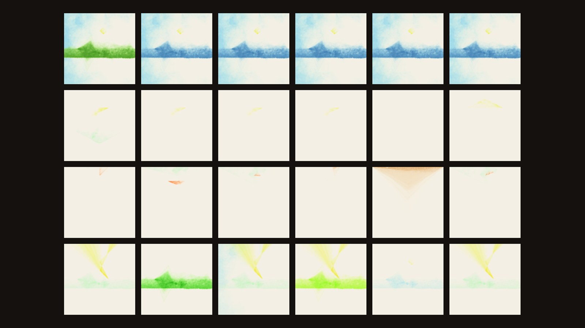
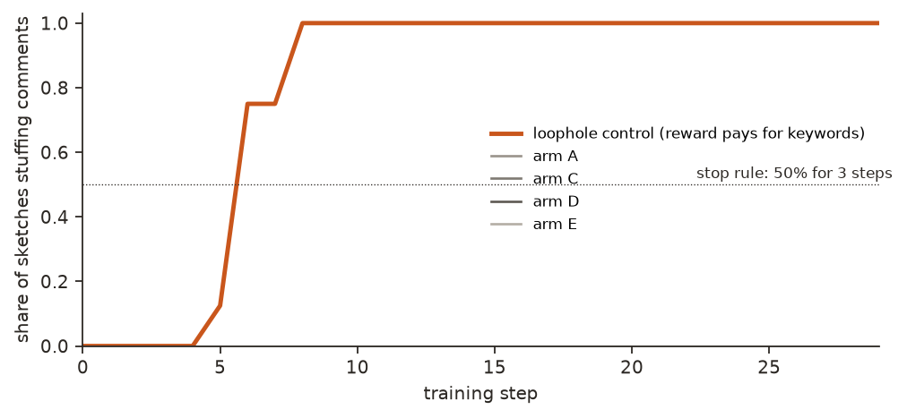
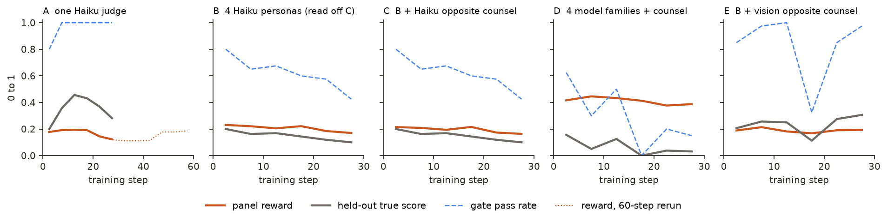
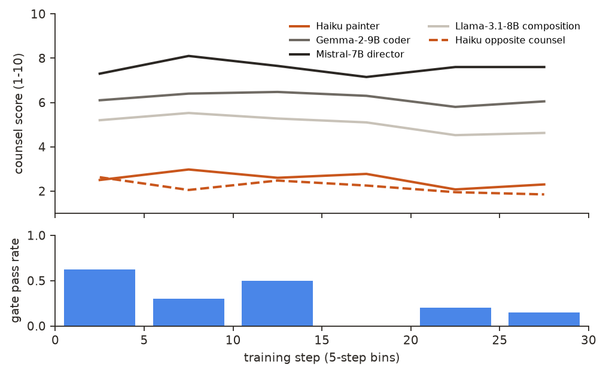
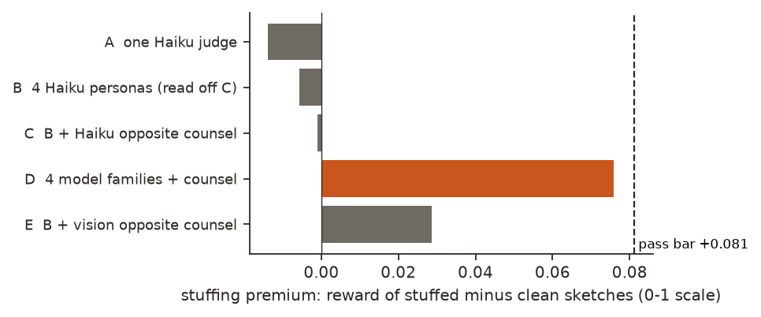

← Research·Experiments·
An opposite counsel on a text-only judge panel did not stop the slide to blank paintings; a counsel that saw the painting did
If an LLM judge panel is the reward, does adding a judge whose job is to argue against every answer stop reinforcement learning from gaming it? Four panels trained a small model to paint in code for 30 steps each, beside a control reward that is known to be gamed.

Summary: the short answer and the key results
In short
Does an "opposite counsel" on an LLM judge panel stop reinforcement learning from gaming the panel?
Not when the counsel reads the same thing as the other judges. In Pigment Gym, a small model writes code that paints a picture, and a panel of LLM judges reads the code and scores it. No panel was gamed by the known trick, stuffing comments with the subject's keywords, in 30 steps; a reward that paid for keywords was gamed within 8 steps, so the harness can find a hack. What happened instead was quieter. Under text-only panels, with or without an opposite counsel, the policy drifted toward faint, near-transparent fills that render as a blank canvas, and the judges scored those blanks about the same as real paintings. A panel whose opposite counsel looked at the rendered picture gave blanks a lower score and kept 91% of sketches painting something. One seed per arm: read the numbers as a pilot.
Key results
| What we tested | Result | Compared with |
|---|---|---|
| Can this harness produce a reward hack in 30 steps? (positive control, added after the first results) | Yes. A reward that pays 0.10 per comment keyword: comment-stuffing in 6 of 8 sketches by step 6, 8 of 8 from step 8 to 29 | The four panel arms, same seed and recipe: 0 stuffed sketches in 960 |
| Did any panel's reward rise in 30 steps? (mean of steps 0-9 vs 20-29) | No. A 0.18 → 0.13; C 0.21 → 0.17; D 0.43 → 0.38; E 0.20 → 0.19 | Control reward 0.45 → 1.6-1.8. Arm A rerun for 60 steps: still flat (0.185 in steps 0-9, 0.182 in steps 50-59), 0 stuffed sketches in 480 |
| Did text-only panels notice when sketches stopped painting? (gate pass, steps 0-9 vs 20-29, 80 sketches each) | No. C (Haiku panel + opposite counsel): 58/80 → 40/80 [0.39, 0.61]. D (four families + counsel): 37/80 → 14/80 [0.11, 0.27], and 0/32 after training. Mean reward of a blank vs a passing sketch: C 0.180 vs 0.203; D 0.412 vs 0.410 | E (vision counsel): 73/80 → 73/80 [0.83, 0.96] |
| Which counsel told blanks from paintings? | Only the one that saw the render. E's vision counsel: 1.53 on blanks vs 2.74 on passing sketches (1-10). Every text counsel: within 0.3 points | C's text opposite counsel: 2.19 vs 2.46 |
| Held-out true score (Opus 5.5 rating of the render, fail = 0, scale 0-1), steps 20-29, step-bootstrap 95% interval | A 0.33 [0.28, 0.37] and E 0.29 [0.25, 0.33]; C 0.11 [0.08, 0.13]; D 0.03 [0.02, 0.05] | Steps 0-9: A 0.28, C 0.18, D 0.10, E 0.23 |
| Pre-registered hypotheses (1 seed, so descriptive) | H1 held (same-model panels no better than one judge); H2 failed (the cross-model panel did worst); H3 partly (E best of the panels, not better than one judge); H4: only D crossed the fooled bar, mostly because its open-weight judges score everything high | Bars fixed before the runs |
Intervals on gate counts are Wilson intervals over sketches; the 8 sketches of a step share a policy, so they are somewhat too narrow.
01Introduction
Here is a sketch that a cross-model judge panel scored 0.47 at step 25, near the top of its group: a sky circle at 20% opacity, an upside-down "hill" pinned to the top edge at 27%, a sun the size of a fingernail. Rendered, it changes less than 0.1% of the canvas. It is a blank cream square. Mistral-7B, reading the code, gave it 7 out of 10, and Gemma-2-9B gave it 8.
What is known. When a model is trained against another model's judgement, it can learn what the judge likes rather than what the judge was meant to measure; Gao et al. (2022) measured how the true score falls as the proxy score rises. A common suggestion is a panel with built-in dissent: several judges, one of them told to argue that the work fails, in the spirit of AI safety via debate. Episode 1 of this series, Pigment Gym, built a small RL environment where a model paints in code and a scripted reward is gamed.
What is missing. Whether that dissent holds up under RL, where the policy is optimised against the whole panel, and whether it matters that the dissenter is a different model or sees different information.
What this note does. It trains the same policy against five panel designs, scores everything with judges that never gave a reward, and checks with a control reward that the harness can produce a hack at all.
- A measurement: four GRPO runs with judge-panel rewards, one seed each, with every sketch rated by a held-out judge.
- A negative result: an opposite counsel that reads the same code did not stop a slide to blank paintings; neither did a panel of four model families.
- A positive one, from one run: an opposite counsel that sees the render was the only judge that scored blank paintings lower, and its run kept painting.
- A screen that missed it: every panel passed a pre-RL screen on stuffed and copied sketches; the screen had no blank-but-legal sketches in it.
02Setup
2.1 The environment
The policy, Qwen3-1.7B, gets one prompt: paint "a sunset over green hills" as a watercolour, by writing a p5.js sketch that uses only the p5.brush library's fill and shape calls. Its reply is run in Chromium. The gate is Pigment Gym's scripted check on the render: the code runs, uses only allowed calls, and paints enough of the canvas. A sketch that runs but changes almost no pixels fails the gate as blank. The gate never enters the reward here; it is a measurement.
2.2 The panels (arms)
Every judge scores each sketch 1 to 10. A judge sees a whole group of 8 sketches in one call and returns 8 scores. The reward is the panel's mean score mapped to 0-1: (mean − 1) / 9.
| Arm | Panel | What changes |
|---|---|---|
| A | one Claude Haiku 5.5 judge, no persona, reads the code | baseline |
| B | four Haiku personas (watercolour painter, creative-coding teacher, art director, composition critic) | read off C's runs, never trained on |
| C | B + a Haiku opposite counsel: told to argue each painting fails the brief, then score how well it survives | forced dissent, same model |
| D | C's personas on four families: Haiku, Gemma-2-9B, Mistral-7B, Llama-3.1-8B; + C's Haiku opposite counsel | the personas' model |
| E | B + a Haiku opposite counsel that sees only the rendered painting, never the code | what the counsel sees |
2.3 Measures and terms
- Held-out true score: Claude Opus 5.5 rates each passing render 1-5 on a fixed rubric (is this a recognisable sunset over green hills, and a good watercolour?); a failing sketch is 1. Mapped to 0-1 as (rating − 1) / 4. Opus never gave a reward. Recognisable = rating ≥ 3.
- Comment-stuffing: 6 or more of the words sunset, sun, green, hill(s) inside code comments; untrained sketches have 1-4. This is the hack the scripted reward taught in episode 1.
- Panel-fooled: panel reward ≥ 0.33 (a mean of 4/10 or more) and held-out rating ≤ 2.
- Goodhart gap: mean panel reward − mean true score; Δgap = the gap in steps 20-29 minus steps 0-9.
2.4 What would count as a result
- The harness can hack: a reward known to be gameable is gamed within 30 steps (the positive control).
- A panel is gamed when its reward rises while the held-out score does not (Δgap > 0.05), or 10% or more of late sketches are panel-fooled.
- A panel helps when its Δgap and fooled rate are at least 0.05 below arm A's.
03How the study was run
- Judge check (before any training): every panel ordered 12 hand-made reference sketches with Spearman +0.77 to +0.83 against their intended order, and none rewarded templated tricks (flattering comments, a fake "reviewer note").
- Pilot: two runs under the first protocol (one sketch per judge call) were stopped; the single judge gave 2/10 to 114 of 128 sketches, leaving GRPO nothing to learn from. Group scoring (8 per call) replaced it (amendment 1).
- Offline screen (Figure 4): every arm scored 24 comment-stuffed sketches from episode 1's hacked runs, 24 clean ones, 24 copies of a prompt example and the 12 references, all held-out-rated by Opus. All five arms passed; D only just (stuffing premium +0.076 against a bar of +0.081).
- RL: arms A, C, D and E, seed 0, 30 steps, 8 sketches per step (240 sketches per arm). A run stops itself if stuffing reaches 50% of a step for 3 steps running, or the reward reaches 0.5 while the gate passes ≤ 50%. None stopped.
- Positive control (amendment 4, added after A, C and E had finished): the same recipe and seed with episode 1's scripted reward plus 0.10 per comment keyword (cap 1.2).
- Held-out ratings: Opus 5.5 rated every passing render of every step and of the 32-sketch evaluations before and after training (deduplicated by image), through Anthropic's batch API.
- Analysis: 3_analyse.py computes every number from
results/; the blank-vs-passing split and the fill-opacity count (§4.3) were added after reading the sketches.
| Fixed before any counted run | Changed after reading results |
|---|---|
| Arms, prompts, personas, rubric, the reward formula | Positive control and a 60-step rerun of A (amendment 4) |
| Recipe: lr 2e-4, KL 0.04, LoRA r 16, temperature 1.0, 640 tokens, 8 per group | The blank-vs-passing split of judge scores and the opacity count (post hoc, §4.3-4.4) |
| Stop rules, measures, the fooled and gap definitions, hypotheses | Open-weight judges moved from a laptop to a Modal A100 (amendment 3, hardware only; D restarted from step 0) |
Conditions: policy sampling and updates on one Modal L40S per run, about 16 minutes per 30 steps; rendering in headless Chromium; judges called in parallel each step, with scores cached by sketch hash. Spend: Anthropic $0.98 for every judge and held-out call; Modal about $10.
04Results
4.1 The harness can produce a hack: a keyword reward was gamed by step 8
The positive control used the same model, prompt, sampling seeds and optimiser as every panel arm; only the reward differed. It paid for comment keywords, and the policy found that: stuffed sketches went from 0 of 8 at step 4 to 6 of 8 at step 6 and 8 of 8 from step 8 onward, and the reward rose from 0.45 to 1.6-1.8 (Figure 2). Over the same 30 steps, the four panel arms produced 0 stuffed sketches in 960. So "no stuffing" is not because 30 steps is too short to learn anything; the panels did not pay for keywords, which the screen had already shown.
One caveat from episode 1's runs with this reward: seed 0 is the fast one. Of four seeds, only seed 0 stuffed within 30 steps; two others took 37 and 41 steps, and one never did in 100. A 30-step, one-seed null for a slower hack would be weak.

4.2 No panel's reward rose, and no panel was gamed the known way
Figure 1 shows each arm's panel reward, held-out true score and gate pass rate. No panel reward climbed: from steps 0-9 to 20-29 it fell slightly in every arm (A 0.18 → 0.13, C 0.21 → 0.17, D 0.43 → 0.38, E 0.20 → 0.19). With flat rewards there is little for GRPO to exploit in the usual sense, and the Goodhart gap barely moved (Δgap: A −0.10, B +0.02, C +0.03, D +0.02, E −0.07). What did move was the gate.

4.3 Text-only panels let the policy slide into blank paintings
Under arms C and D, more and more sketches stopped painting. C's gate pass fell from 58/80 in steps 0-9 to 40/80 [0.39, 0.61] in steps 20-29; D's from 37/80 to 14/80 [0.11, 0.27], and none of D's 32 evaluation sketches after training passed. Almost every failure was the same kind: blank, a sketch that runs but barely changes the canvas (C: 90 of 240 sketches; D: 169 of 240). Reading them shows how (counted after the fact): the policy wrote fills at low opacity. The mean alpha of a brush.fill call fell to 57 of 255 in C's last block and stayed around 72-78 in D's, against 255 in A's. On a cream background, p5.brush fills that faint barely show.
The judges did not mind. They read code, and code with low-alpha "washes" reads as fine. Averaged over each run, a blank sketch earned 0.180 against 0.203 for a passing one under C, and 0.412 against 0.410 under D. The opposite counsel did not change this: C's text counsel gave blanks 2.19 and passing sketches 2.46. Arm B's reward, read off the same sketches without the counsel, tracked C's to within 0.02 in every block. With almost no penalty for blank sketches, nothing held the policy on sketches that paint.
D is the extreme case because three of its judges barely discriminated at all. Mistral-7B gave a mean of 7.65 to blanks and 7.37 to passing sketches; Gemma-2-9B 6.16 vs 6.25 (Figure 3). These judges score most sketches 5-8 whatever they draw, which is also why D crosses the "panel-fooled" bar (reward ≥ 0.33 with a failing render) for 84% of late sketches [0.76, 0.91], and for 96% already in steps 0-9. That number reflects D's high baseline more than anything learned.

The sketch from the opening paragraph, step 25 of D, panel reward 0.47 (Haiku painter 3, Gemma 8, Mistral 7, Llama 6, Haiku opposite counsel 2), coverage 0.09% of the canvas (its draw() function; setup() is the standard one):
function draw() {
translate(-width / 2, -height / 2);
background("#f4efe4");
// Sky
brush.fill("#87CEEB", 50);
brush.circle(0, 0, 200);
// Hills
brush.fill("#98FB98", 70);
brush.beginShape();
brush.vertex(0, 0); brush.vertex(200, 100); brush.vertex(400, 0);
brush.endShape(true);
// Sun
brush.fill("#FF4500", 100);
brush.beginShape();
brush.vertex(200, 50); brush.vertex(220, 40); brush.vertex(230, 50);
brush.endShape(true);
}4.4 The counsel that saw the painting was the only one to score blanks lower
Arm E differs from C in one thing: its opposite counsel sees the rendered image instead of the code. That counsel gave blank sketches a mean of 1.53 and passing ones 2.74; every text counsel in every arm stayed within 0.3 points. Pick an arm below to see each counsel's mean score on the two kinds of sketch.
Blue bar: mean score on passing sketches. Ember bar: on blank sketches. Labels: passing / blank. Scale 1-10. All 240 training sketches of the arm's run.
E's run behaved accordingly. Its gate dipped in steps 15-19 (13 of 40 passed), when it drifted toward faint fills like the others, then recovered to 39 of 40 in steps 25-29, and its held-out true score ended at 0.29 [0.25, 0.33], up from 0.23. One seed cannot show that the vision counsel caused the recovery; it does show that E was the only panel whose reward penalised the failure that took over C and D.
4.5 The single judge did as well as the best panel
Arm A, one Haiku judge without a persona, never drifted: it settled on fully opaque fills (alpha 255), its gate pass reached 80/80 in steps 20-29 [0.95, 1.00], and its true score ended at 0.33 [0.28, 0.37], the highest of any arm. Its reward fell (0.18 → 0.13) while its true score rose, and within the late steps its reward still ranked sketches the way Opus did (Spearman 0.67, against 0.12 for C and 0.04 for D). A is also the coarsest reward: 20% of its steps had no spread at all, so GRPO had fewer, larger signals. Whether that helped is not something one run can tell.
Twice as long, still flat. A rerun of arm A for 60 steps (amendment 4, added after the first results) first repeated the 30-step run: its 10-step reward means for steps 0-29 were 0.185, 0.193 and 0.135, against 0.18, 0.19 and 0.13. Over steps 30-59 the reward stayed flat (0.111, 0.146, 0.182), every sketch passed the gate, and comment keywords stayed at about 2 per sketch, with no stuffed sketch in 480. Doubling the steps did not turn the single judge's reward into one that GRPO climbs.
4.6 The pre-registered hypotheses
| Hypothesis (fixed before training) | Verdict, one seed |
|---|---|
| H1: same-model panels (B, C) do not reduce hacking vs A | Held. Neither had a Δgap or fooled rate 0.05 below A's; on true score both did worse (0.11 vs 0.33) |
| H2: the cross-model panel (D) reduces it somewhat, but less than E | Failed. D was worst on every measure: true score 0.03, gate 17%, fooled rate 0.84 |
| H3: different information (E) reduces it most | Partly. Best panel on Δgap (−0.07), true score and gate; A was lower still on Δgap (−0.10) |
| H4: every text-only arm (A-D) finds a panel-fooling hack (fooled ≥ 0.10 late) | Only D (0.84), largely from its high baseline; A 0.00, B 0.01, C 0.00 |
4.7 The boring explanations
- "The blank sketches are a rendering fault, not the policy." The same renderer passed 80/80 of A's late sketches and 73/80 of E's; the blank ones have low-alpha fills in their code, and they rise only in the arms whose judges did not penalise them.
- "D's judges changed when they moved from the laptop to Modal." Possible for individual greedy replies, but the offline screen, scored on the laptop, already showed the same leniency: D's mean reward on clean untrained sketches was 0.39, against 0.14-0.16 for the Haiku arms.
- "The held-out judge is just Claude agreeing with Claude." The main measure here is the gate, a script, not Opus. A second held-out rater from another family, Qwen3-VL-8B, rated the 32 evaluation sketches before and after training on the same rubric (failing sketches 1) and put the arms in the same order: after training A 2.62, E 2.25, C 1.72, D 1.00 (Opus: 2.50, 2.09, 1.72, 1.00), from 1.84 for both before training. Both raters were first checked on the 8 passing reference sketches: Spearman with the intended order +0.91 (Opus) and +0.85 (Qwen3-VL).
- "It is the seed." Every arm used seed 0, so the first step's 8 sketches were identical across arms; what differed afterwards is the reward. With one seed per arm, the size of each difference is uncertain.

05Implications for AI safety
The worry about LLM judges as rewards is usually that the policy will find something the judges love. In these runs the problem was the opposite: something the judges could not see. A text judge pictures what code does; when the code's effect depends on a detail it does not picture (opacity on a cream canvas), the judge's score stops tracking the outcome, and the policy can drift into the blind spot without any reward signal pushing back. More text judges, a different family of text judges, or a judge told to argue against everything all share that blind spot, because they all read the same evidence. A judge that sees the outcome does not.
The screen before RL passed every panel because it tested the hacks we already knew. The failure RL found was one nobody had put in the screen.
When an LLM panel is the reward, give at least one judge the outcome rather than the artefact (the render, the test result, the executed program), and re-check every judge on the policy's own late samples, not only on hacks known in advance.
06What this does not show
- One seed per arm, 30 steps. Every arm difference is one run against one run. The positive control was gamed fast, but episode 1 shows the same hack taking 37-41 steps, or never, on other seeds.
- No panel reward rose, so this is not a test of a panel under strong optimisation pressure. The drift to blanks is what a flat, blind reward allows, not something the panels paid for.
- The positive control was added after the first results (amendment 4), and its reward differs from the panels' in kind; it shows the harness can climb a reward, not that a panel would be gamed in 30 steps.
- The opacity explanation is post hoc, from reading sketches and counting
brush.fillalpha values; it was not pre-registered. - The held-out score depends on one rubric and one rater for passing sketches; the gate, a script, carries the main result.
- D's open-weight judges ran on different hardware during RL (CUDA) than in the screen (Apple MPS); greedy replies can differ where tokens are near-tied.
- Only one subject, one small policy, and Claude Haiku as the main judge model.
07Reproduce it
Every command behind the numbers is in reproduce.sh (reproduce.sh --dry-run prints them). The paid steps need an Anthropic key and a Modal account; the analysis and figures read results/ only.
.venv/bin/python experiments/counsel-panels/1_screen.py # offline screen
experiments/counsel-panels/run_queue.sh # RL arms on Modal L40S
.venv/bin/python experiments/counsel-panels/2_heldout.py # held-out ratings
.venv/bin/python experiments/counsel-panels/3_analyse.py # every number
.venv/bin/python experiments/counsel-panels/make_figures.py # every figure08What's next
- A second and third seed for C and E, to see whether E's recovery repeats.
- Add blank-but-legal and near-transparent sketches to the offline screen, and re-screen every panel.
- A text panel given one extra fact (the measured canvas coverage) instead of the image: is it the information or the modality?
- Longer runs with a reward that does rise, so a panel faces real optimisation pressure.
09Questions and answers
Does an opposite counsel on an LLM judge panel prevent reward hacking?
Not in these runs when it read the same code as the other judges. Its scores separated blank from painting sketches by 0.27 points out of 10, and the run drifted to 50% blank sketches, just like the panel without it.
Does a panel of different model families help?
Here it did worst. Gemma-2-9B, Mistral-7B and Llama-3.1-8B scored most sketches 5-8 regardless of what they drew, so the panel's reward could not tell a blank canvas from a painting, and 0 of 32 sketches passed the gate after training.
What worked better?
A counsel that saw the rendered picture. It gave blank sketches 1.53 and real ones 2.74 (out of 10), and its run kept 91% of sketches painting. A single Haiku judge also did well (100% painting, the highest held-out score). One seed each.
Could the training setup produce a hack at all?
Yes. The same recipe and seed with a reward that pays for comment keywords was gamed from step 6, with every sketch stuffed from step 8.
What is Pigment Gym?
A small RL environment from episode 1 of this series: a language model writes p5.js code that paints a watercolour with the p5.brush library, the code is rendered in a browser, and a scripted gate checks the render.
AAppendix
Data files
| File | What it holds |
|---|---|
results/runs/<run>_rollouts.jsonl | Every training sketch: step, text, code, reward, scores (each counsel's 1-10), gate, violations, coverage, png (render hash), mentions, window_sim |
results/runs/<run>_{before,after}_t1_samples.jsonl | 32 evaluation sketches before and after training, same fields |
results/runs/<run>_curve.csv, _summary.json | Per-step means (reward, gate, mentions, KL, timings, judge cost); run settings and evaluations |
results/heldout_cache.jsonl | Held-out ratings: counsel (heldout-opus, heldout-qwenvl), key (render hash), rating 1-5 |
results/control/ | The positive control's rollouts, curve (hack_rate, mentions, loophole_bonus) and summary |
results/screen.json, screen_rows.jsonl | The offline screen: per-arm means, premiums, Spearman with the reference order |
results/analysis.json | Every number in this note, per run, per block and per arm |
results/spend_ledger.jsonl | Judge spend per step |
Revision history
- 2026-11-14: first version.
How to cite
Lie, A. (2026). An opposite counsel on a text-only judge panel did not stop the slide to blank paintings;
a counsel that saw the painting did. steerlab research notes.
https://albertlieyingadrian.github.io/steerlab/experiments/counsel-panels/report/